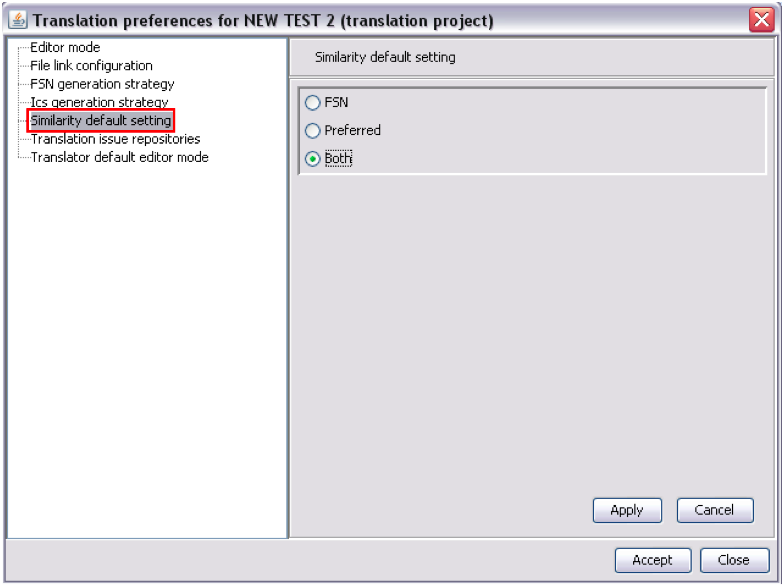

Similarity default setting

- Establishes preferences for displaying matches in Similarity searches by default
(the user will be able to change this options when the Similarity tab is opened)
- FSN: indicates that matches between source FSNs and any translated target
descriptions will be displayed
- Preferred: indicates that matches between source PTs and any translated
target descriptions will be displayed
- Both: indicates that matches between source FSNs + PTs and any translated
target descriptions will be displayed